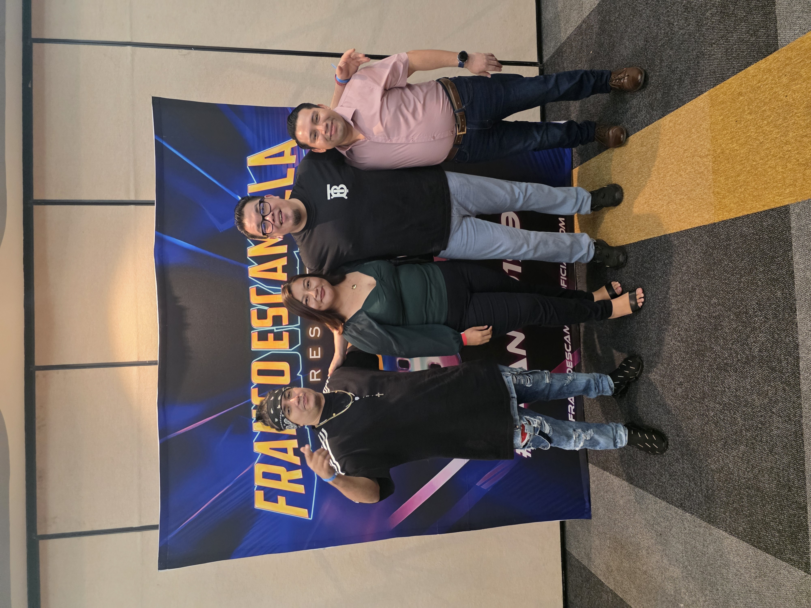

Feliz Aniversario, mi amor ❤️
Hoy celebramos un año lleno de momentos inolvidables a tu lado. Quise reunir estos 12 recuerdos para recordarte lo feliz que me haces cada mes del año.
 Nuestro comienzo ❤️
Nuestro comienzo ❤️ 2. Risas juntos ✨
2. Risas juntos ✨ 3. Momentos mágicos 💕
3. Momentos mágicos 💕
4. Contigo todo es mejor 🌸 5. Aventuras juntos 🗺️
5. Aventuras juntos 🗺️ 6. Medio año a tu lado 💖
6. Medio año a tu lado 💖 7. Mi lugar favorito 🥰
7. Mi lugar favorito 🥰 8. Cada día te amo más 💌
8. Cada día te amo más 💌 9. Inolvidable ✨
9. Inolvidable ✨ 10. Mi persona favorita ❤️
10. Mi persona favorita ❤️ 11. Casi un año 💕
11. Casi un año 💕 12. ¡Feliz aniversario! 🥂
12. ¡Feliz aniversario! 🥂
Tienes ojos bellos que ya no sé
si son destellos o reflejos los que veo,
me gustaría perderme en esos abismos maravillosos.
Eres esa gravedad lunar
que hace palpitar mi corazón sin cesar.
Verte pasar es como ver una estrella fugaz cruzar;
no sé navegar,
pero aprendería a nadar entre constelaciones por verte. ✨
Gracias por tu sonrisa, por tu apoyo y por hacer que cada día valga la pena. Vamos por muchos años más juntos.
Con todo mi amor ❤️